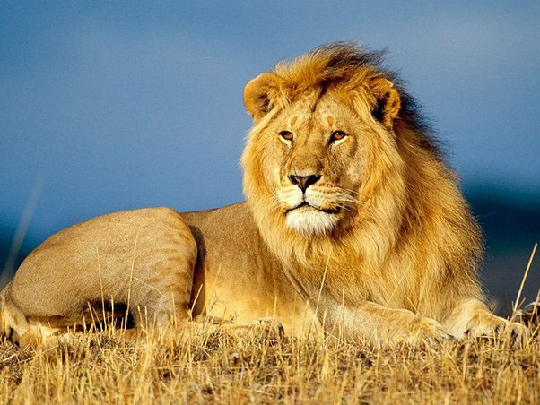

UK is also referred as 'Old Blighty'

The Jorvik Viking Festival is an annual city-wide celebration originating in York, England with a rich norse heritage. Celebrating the arrival of spring,it is a week long event, exploring the impact the Viking invasion had on Anglo-Saxon England. You can hear norse sagas , dress like a viking , pick up a sword and also watch dramatic combat reenactments.
The national animal of United Kingdom is Lion
